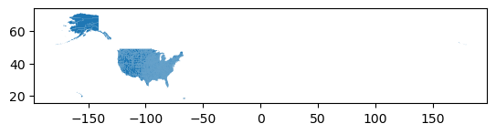
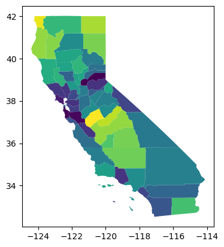

import os
os.environ['PROJ_LIB'] = '/opt/tljh/user/share/proj'import requests
url="https://raw.githubusercontent.com/plotly/datasets/master/geojson-counties-fips.json"
output_file = 'counties-fips.json'response = requests.get(url)
if response.status_code == 200:
with open(output_file, 'wb') as file:
file.write(response.content)
print(f"File downloaded as '{output_file}'")
else:
print(f"Failed to download file. Status code: {response.status_code}")File downloaded as 'counties-fips.json'import geopandas as gpdimport pandas as pdgdf = gpd.read_file("counties-fips.json")gdf.shape(3221, 8)type(gdf)geopandas.geodataframe.GeoDataFramegdf.head()| id | GEO_ID | STATE | COUNTY | NAME | LSAD | CENSUSAREA | geometry | |
|---|---|---|---|---|---|---|---|---|
| 0 | 01001 | 0500000US01001 | 01 | 001 | Autauga | County | 594.436 | POLYGON ((-86.49677 32.34444, -86.71790 32.402... |
| 1 | 01009 | 0500000US01009 | 01 | 009 | Blount | County | 644.776 | POLYGON ((-86.57780 33.76532, -86.75914 33.840... |
| 2 | 01017 | 0500000US01017 | 01 | 017 | Chambers | County | 596.531 | POLYGON ((-85.18413 32.87053, -85.12342 32.772... |
| 3 | 01021 | 0500000US01021 | 01 | 021 | Chilton | County | 692.854 | POLYGON ((-86.51734 33.02057, -86.51596 32.929... |
| 4 | 01033 | 0500000US01033 | 01 | 033 | Colbert | County | 592.619 | POLYGON ((-88.13999 34.58170, -88.13925 34.587... |
gdf.dtypesid object
GEO_ID object
STATE object
COUNTY object
NAME object
LSAD object
CENSUSAREA float64
geometry geometry
dtype: objectgdf.plot()<Axes: >
gdf.shape(3221, 8)gdf.columnsIndex(['id', 'GEO_ID', 'STATE', 'COUNTY', 'NAME', 'LSAD', 'CENSUSAREA',
'geometry'],
dtype='object')df = pd.read_excel('PovertyEstimates.xlsx', 'PovertyEstimates', skiprows=4)df.head()| FIPS_Code | Stabr | Area_name | Rural-urban_Continuum_Code_2003 | Urban_Influence_Code_2003 | Rural-urban_Continuum_Code_2013 | Urban_Influence_Code_ 2013 | POVALL_2021 | CI90LBALL_2021 | CI90UBALL_2021 | ... | CI90UB517P_2021 | MEDHHINC_2021 | CI90LBINC_2021 | CI90UBINC_2021 | POV04_2021 | CI90LB04_2021 | CI90UB04_2021 | PCTPOV04_2021 | CI90LB04P_2021 | CI90UB04P_2021 | |
|---|---|---|---|---|---|---|---|---|---|---|---|---|---|---|---|---|---|---|---|---|---|
| 0 | 0 | US | United States | NaN | NaN | NaN | NaN | 41393176.0 | 41149497.0 | 41636855.0 | ... | 16.3 | 69717.0 | 69583.0 | 69851.0 | 3349149.0 | 3299669.0 | 3398629.0 | 18.3 | 18.0 | 18.6 |
| 1 | 1000 | AL | Alabama | NaN | NaN | NaN | NaN | 800848.0 | 782169.0 | 819527.0 | ... | 22.5 | 53990.0 | 53218.0 | 54762.0 | 71220.0 | 66888.0 | 75552.0 | 25.1 | 23.6 | 26.6 |
| 2 | 1001 | AL | Autauga County | 2.0 | 2.0 | 2.0 | 2.0 | 6296.0 | 4772.0 | 7820.0 | ... | 20.4 | 66444.0 | 60061.0 | 72827.0 | NaN | NaN | NaN | NaN | NaN | NaN |
| 3 | 1003 | AL | Baldwin County | 4.0 | 5.0 | 3.0 | 2.0 | 25526.0 | 21599.0 | 29453.0 | ... | 18.5 | 65658.0 | 60723.0 | 70593.0 | NaN | NaN | NaN | NaN | NaN | NaN |
| 4 | 1005 | AL | Barbour County | 6.0 | 6.0 | 6.0 | 6.0 | 5089.0 | 3773.0 | 6405.0 | ... | 44.6 | 38649.0 | 34308.0 | 42990.0 | NaN | NaN | NaN | NaN | NaN | NaN |
5 rows × 34 columns
gdf.head()| id | GEO_ID | STATE | COUNTY | NAME | LSAD | CENSUSAREA | geometry | |
|---|---|---|---|---|---|---|---|---|
| 0 | 01001 | 0500000US01001 | 01 | 001 | Autauga | County | 594.436 | POLYGON ((-86.49677 32.34444, -86.71790 32.402... |
| 1 | 01009 | 0500000US01009 | 01 | 009 | Blount | County | 644.776 | POLYGON ((-86.57780 33.76532, -86.75914 33.840... |
| 2 | 01017 | 0500000US01017 | 01 | 017 | Chambers | County | 596.531 | POLYGON ((-85.18413 32.87053, -85.12342 32.772... |
| 3 | 01021 | 0500000US01021 | 01 | 021 | Chilton | County | 692.854 | POLYGON ((-86.51734 33.02057, -86.51596 32.929... |
| 4 | 01033 | 0500000US01033 | 01 | 033 | Colbert | County | 592.619 | POLYGON ((-88.13999 34.58170, -88.13925 34.587... |
df['fips'] = df.FIPS_Code.astype(str).str.zfill(5)df.fips0 00000
1 01000
2 01001
3 01003
4 01005
...
3190 56037
3191 56039
3192 56041
3193 56043
3194 56045
Name: fips, Length: 3195, dtype: objectgdf1 = gdf.merge(df, left_on='id', right_on='fips', how='left')gdf1.shape(3221, 43)gdf.shape(3221, 8)gdf1.head()| id | GEO_ID | STATE | COUNTY | NAME | LSAD | CENSUSAREA | geometry | FIPS_Code | Stabr | ... | MEDHHINC_2021 | CI90LBINC_2021 | CI90UBINC_2021 | POV04_2021 | CI90LB04_2021 | CI90UB04_2021 | PCTPOV04_2021 | CI90LB04P_2021 | CI90UB04P_2021 | fips | |
|---|---|---|---|---|---|---|---|---|---|---|---|---|---|---|---|---|---|---|---|---|---|
| 0 | 01001 | 0500000US01001 | 01 | 001 | Autauga | County | 594.436 | POLYGON ((-86.49677 32.34444, -86.71790 32.402... | 1001.0 | AL | ... | 66444.0 | 60061.0 | 72827.0 | NaN | NaN | NaN | NaN | NaN | NaN | 01001 |
| 1 | 01009 | 0500000US01009 | 01 | 009 | Blount | County | 644.776 | POLYGON ((-86.57780 33.76532, -86.75914 33.840... | 1009.0 | AL | ... | 56894.0 | 52632.0 | 61156.0 | NaN | NaN | NaN | NaN | NaN | NaN | 01009 |
| 2 | 01017 | 0500000US01017 | 01 | 017 | Chambers | County | 596.531 | POLYGON ((-85.18413 32.87053, -85.12342 32.772... | 1017.0 | AL | ... | 45447.0 | 40729.0 | 50165.0 | NaN | NaN | NaN | NaN | NaN | NaN | 01017 |
| 3 | 01021 | 0500000US01021 | 01 | 021 | Chilton | County | 692.854 | POLYGON ((-86.51734 33.02057, -86.51596 32.929... | 1021.0 | AL | ... | 55142.0 | 49687.0 | 60597.0 | NaN | NaN | NaN | NaN | NaN | NaN | 01021 |
| 4 | 01033 | 0500000US01033 | 01 | 033 | Colbert | County | 592.619 | POLYGON ((-88.13999 34.58170, -88.13925 34.587... | 1033.0 | AL | ... | 53341.0 | 48729.0 | 57953.0 | NaN | NaN | NaN | NaN | NaN | NaN | 01033 |
5 rows × 43 columns
gdf1.columnsIndex(['id', 'GEO_ID', 'STATE', 'COUNTY', 'NAME', 'LSAD', 'CENSUSAREA',
'geometry', 'FIPS_Code', 'Stabr', 'Area_name',
'Rural-urban_Continuum_Code_2003', 'Urban_Influence_Code_2003',
'Rural-urban_Continuum_Code_2013', 'Urban_Influence_Code_ 2013',
'POVALL_2021', 'CI90LBALL_2021', 'CI90UBALL_2021', 'PCTPOVALL_2021',
'CI90LBALLP_2021', 'CI90UBALLP_2021', 'POV017_2021', 'CI90LB017_2021',
'CI90UB017_2021', 'PCTPOV017_2021', 'CI90LB017P_2021',
'CI90UB017P_2021', 'POV517_2021', 'CI90LB517_2021', 'CI90UB517_2021',
'PCTPOV517_2021', 'CI90LB517P_2021', 'CI90UB517P_2021', 'MEDHHINC_2021',
'CI90LBINC_2021', 'CI90UBINC_2021', 'POV04_2021', 'CI90LB04_2021',
'CI90UB04_2021', 'PCTPOV04_2021', 'CI90LB04P_2021', 'CI90UB04P_2021',
'fips'],
dtype='object')gdf.columnsIndex(['id', 'GEO_ID', 'STATE', 'COUNTY', 'NAME', 'LSAD', 'CENSUSAREA',
'geometry'],
dtype='object')ca = gdf1[gdf1.STATE=='06']ca.shape(58, 43)ca.plot(column='PCTPOVALL_2021')<Axes: >